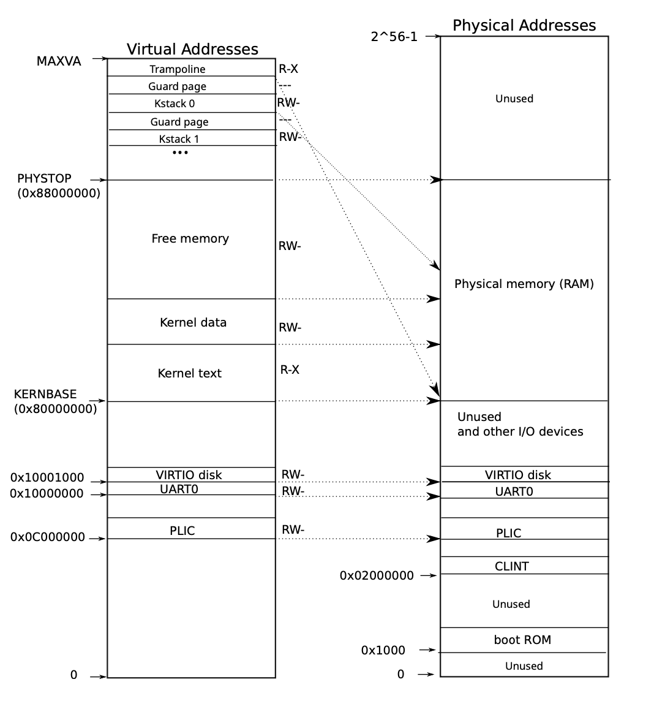
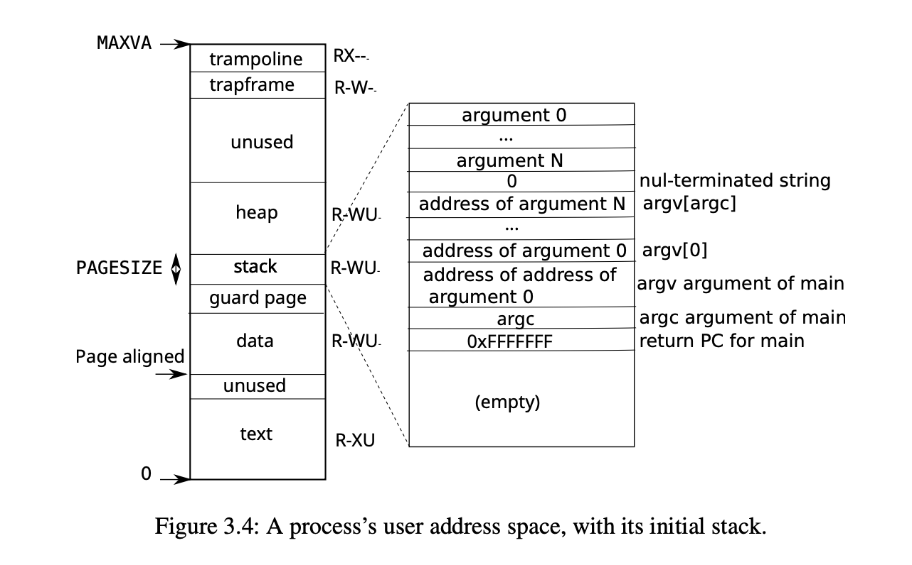
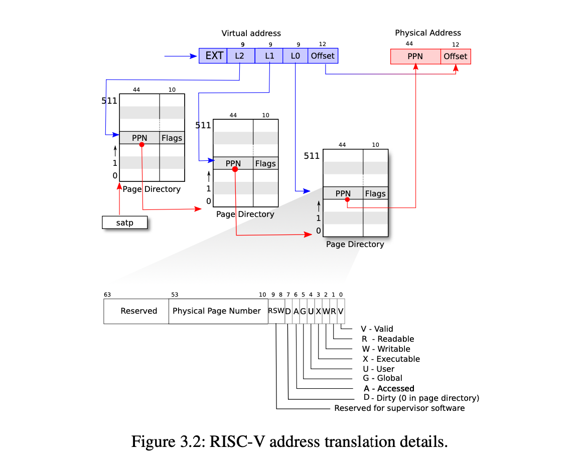
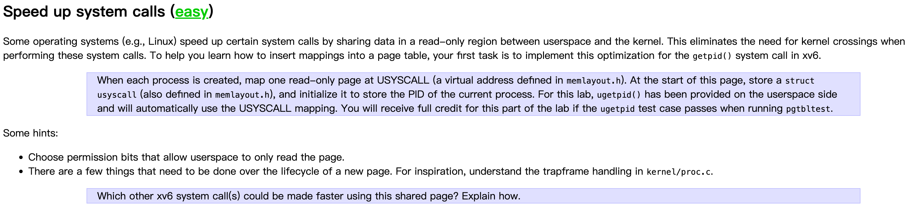

PageTable
Introduce
同样，这个实验我主要补充一些学到的东西，而不是实验的实现, 本次实验是内存和页表相关的实验。 所以补充的只是也是集中于这些内容。
内存分布
我们知道的是，对于操作系统中，通常分为 user space 和 kernel space 两个空间。
kernel space
kernel space 就是专属于内核的空间，对于 kernel 来说，其实也是有自己的虚拟内存，只不过在 kernel space 中是 等值映射 和 间接映射 混合的方式。如下图:

上图就很明显的展示了 kernel address space
我们可以发现的是:
-
等值映射：
- kernel text
- kernel data
- free memory
-
间接映射的存在两个:
- kernel stack
- 用户栈
- 内核栈
- Trampoline page
- kernel stack
user space
对于 user space 其实就简单了许多, 如下图:

我们可以看到上图，这里其实就可以考虑到一个之前面试问到的问题:无限递归问题
对于 user space 来说，都会存在一个栈，通常是有一个预设值的。
递归深度超过阈值 引起的本质原因就是栈溢出
栈帧
stack frame
栈帧 通常是由以下的几部分组成:
- 局部变量
- 参数
- 返回地址
递归函数 是一种特殊的函数调用，它在函数体内 调用自己， 如果递归函数没有一个有效的 base case 来进行终止，那么会无限的调用自己。然后就会导致函数栈帧不断的被压到了栈中,导致栈溢出，就会被迫终止递归调用，也就是所谓的超过了递归深度
Speed up Syscalls
对于
syscall的加速，具体的情况如下:(gemini) 的回答
你提到的这个概念非常先进，它确实是现代操作系统为了提高系统调用（syscall）性能而采用的一项重要优化技术。让我来详细为你讲解一下。
1. 传统的用户空间与内核空间隔离
在传统的虚拟内存模型中，用户空间和内核空间是严格隔离的。它们有各自独立的页表映射，当发生系统调用时，CPU 需要执行一个特权级切换，并伴随着昂贵的上下文切换和页表切换。
-
用户空间 (User Space)：
- 应用程序运行的地方。
- 权限级别低，无法直接访问硬件和敏感数据。
- 包含应用程序的代码（text）、数据（data）、堆（heap）和栈（stack）。
- 其中，代码段（text section）通常是只读 (Read Only, RO) 的，以防止程序在运行时意外修改自己的指令。
-
内核空间 (Kernel Space)：
- 操作系统内核运行的地方。
- 权限级别高，可以访问所有硬件和内存。
- 包含内核的代码、数据、页表等。
- 内核代码段也是只读的，以保证内核的稳定性和安全性。
2. 现代操作系统的优化：共享只读区域
为了加速系统调用，现代操作系统采取了一种叫做 vDSO (Virtual Dynamic Shared Object) 或 syscall page 的技术。这种技术的核心思想是：
在内核和用户空间之间，共享一块只读的内存区域，这块区域包含了一些系统调用所需的辅助代码和数据。
为什么这么做可以加速系统调用？
传统的系统调用需要特权级切换，这是一个非常耗时的过程。如果能减少切换的频率，或者让一些工作在用户空间完成，就可以大大提高性能。
共享只读区域的典型应用就是 vDSO。
vDSO (Virtual Dynamic Shared Object)
vDSO 是 Linux 内核的一项功能，它将内核中的一小部分只读代码和数据，以只读共享库的形式，映射到每个进程的用户地址空间。
这个共享区域通常包含：
- 高效的系统调用入口点：一些系统调用的入口代码。
- 辅助函数：比如获取时间（
gettimeofday）等，这些函数在某些情况下可以完全在用户空间执行，而不需要进入内核。 - 系统状态信息：一些内核提供的只读数据，如 CPU 类型、页面大小等。
vDSO 的工作流程
- 内核映射：在进程启动时，内核会创建一个特殊的只读映射，将 vDSO 的物理内存页映射到该进程的用户地址空间。
- 用户调用：当用户程序调用一个像
gettimeofday这样的函数时，它不会直接发起系统调用。 - 直接执行：程序会跳转到 vDSO 区域中的代码。这段代码可能直接从内核维护的只读共享数据中读取时间，然后返回，而无需进行特权级切换。
- 最终fallback：如果 vDSO 中的代码无法完成任务（例如，需要更复杂的操作），它才会发起真正的
syscall指令，进入内核。
3. 用户空间与内核空间共享只读区域的实现细节
- 页表机制：这种共享是通过虚拟内存的页表机制实现的。内核将 vDSO 所在的同一块物理内存，分别映射到所有进程的用户页表，但都设置为只读权限。
- 安全性：由于这个区域是只读的，用户程序无法修改其中的代码或数据。即使发生漏洞，也无法利用这个区域来篡改内核代码，因此是安全的。
- 地址空间：vDSO 通常位于用户地址空间的一个固定且不常用的高地址区域，以避免与其他用户代码冲突。
总结
- 用户空间的只读区域：指应用程序自身的代码段。
- 内核空间的只读区域：指内核自身的代码段。
- 共享只读区域：指的是像 vDSO 这样的特殊内存区域。它将一小部分内核代码以只读的形式映射到所有用户进程的地址空间，从而允许一些简单的系统调用在用户态直接完成，避免了昂贵的特权级切换，显著提高了系统性能。
这是一种将内核的部分功能“暴露”给用户空间，同时又通过只读保护来确保系统安全性的高级优化技术。
pagetable 多级映射

实验报告
我觉得这个实验是有必要进行记录的
speed up syscalls

一开始没太读懂这个实验的目的是什么，现在才清楚具体的要求。我们直接看测试代码，来进行分析。1 2 3 4 5 6 7 8 9 10 11 12 13 14 15 16 17 18 19 20 21 22 23 | |
我们看到这个测试的代码，主要的目的就是需要进行 getpid() 和 ugetpid() 的比较。
getpid()是我们原先就存在的系统调用ugetpid()是已经在 user space 实现好的用户态内的可以调用的加速的系统调用
具体的 加速 是为何？
我们来复习一下,之前的系统调用是需要进行用户态和内核态的切换，这样太 消耗 成本了，对于这种getpid() 简单的系统调用，同时 只读需求, 我们是其实是可以进行优化的，没必要进行切换。所以我们这里的策略就是引入了一个 struct usyscall, 里面就用来存放部分的 kernel 中 只读的代码段，比如 pid, time 之类的。
1 2 3 4 5 6 7 8 9 10 11 12 13 14 15 16 17 18 | |
对于上述的代码ugetpid(), 我们可以看到的是，其实是fetch了 USYSCALL 这个虚拟地址，并且把它强制转换成了 struct usyscall * 的指针。所以就很好理解了，我们其实 主要的思路还是共享部分只读的代码段。
USYSCALL 这个是用户态中的虚拟地址，我们因为需要 shared， 所以就需要将这个虚拟地址和我们 kernel 中给 usyscall 这个结构体分配的物理地址进行映射。同时来提供了 PTE_U 和 PTE_R 的权限，即允许用户态进行访问。
思路就很简单了,我们要做的事如下:
- 在
proc这个数据结构中加入usyscall这个结构体 - 我们在
allocproc()中对usyscall进行分配，可以参考对于trapframe的操作 - 在
proc_pgtbl()中进行usyscall的映射，这样用户态的ugetpid()就可以直接访问了。